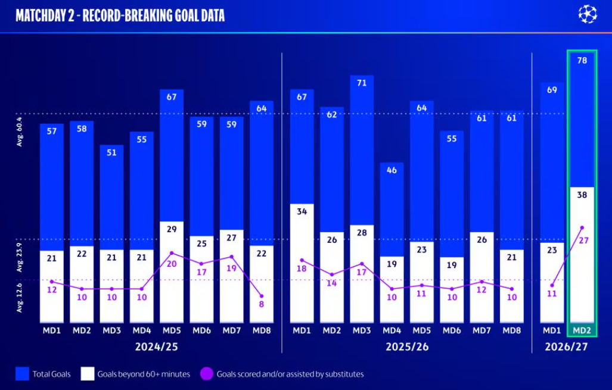

UEFA Champions League: ¿quién hizo su debut esta semana?

UEFA Champions League: ¿quién hizo su debut esta semana?

En la jornada 3, podría merecer la pena prestar atención al papel de los suplentes, a juzgar por el impacto que tuvieron en la avalancha récord de goles de la semana pasada. El observador técnico de la UEFA, Ole Gunnar Solskjær, y el equipo de análisis de partidos de la UEFA nos lo explican con más detalle; En la jornada 2 tuvieron un gran impacto. En medio de una avalancha sin precedentes de 78 goles, la unidad de análisis de partidos de la UEFA destacó el llamativo papel desempeñado por los suplentes, que aportaron 18 goles —la cifra más alta, empatada con otra, en una semana de la Champions League— y un récord de 19 asistencias.

En ningún partido los suplentes desempeñaron un papel más espectacular que en la remontada del Real Madrid (3-4) ante la Roma, cuando Carlos Espí y Endrick marcaron y Arda Güler dio dos asistencias. Curiosamente, los cinco equipos españoles ganaron con la ayuda de un suplente que marcó un gol, incluido Cucho Hernández, del Real Betis, cuyo gol contra el Porto también aparece en el análisis en vídeo que se muestra a continuación. Marcó con un remate al primer toque en su segunda intervención en el partido, lo que pone de relieve la necesidad de que un suplente sea paciente y esté preparado, tal y como se analizará en nuestra reflexión técnica al final.